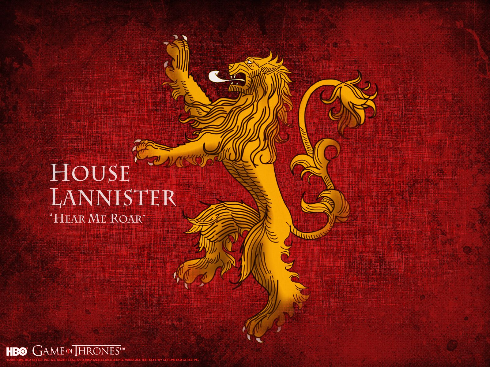
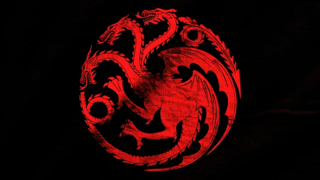
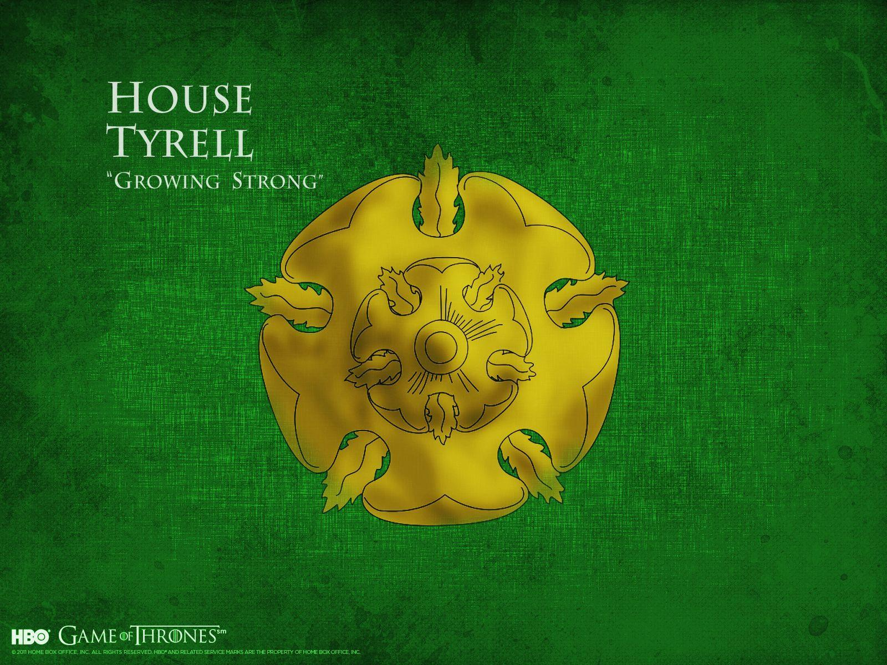
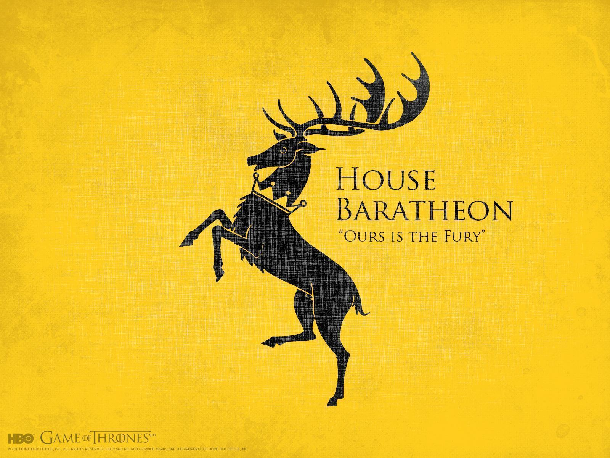
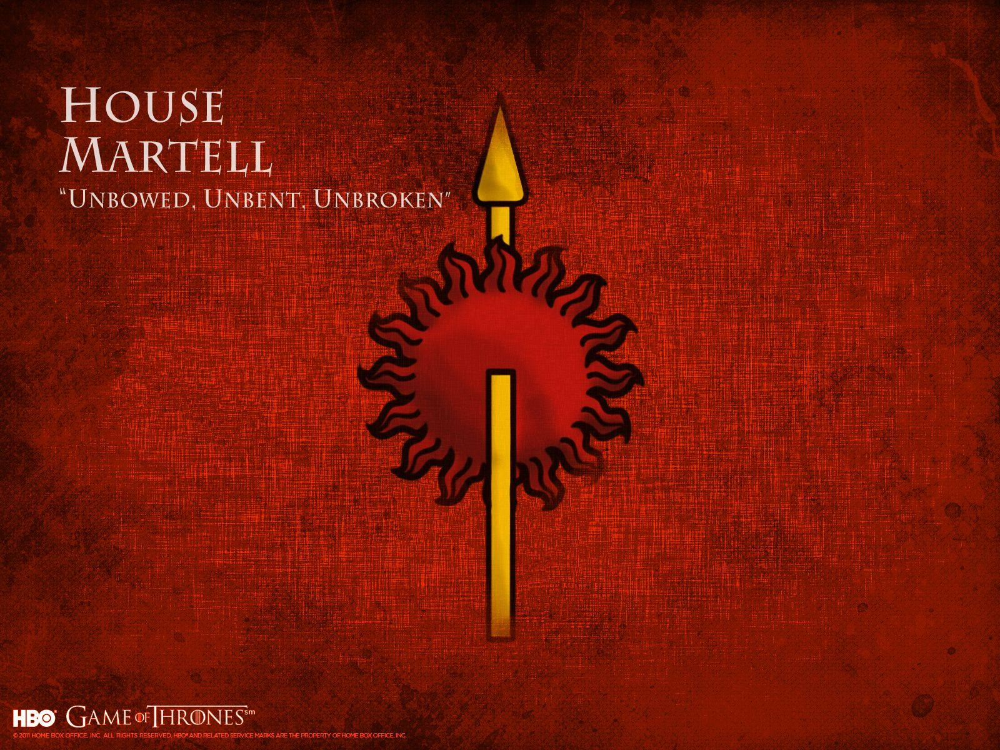
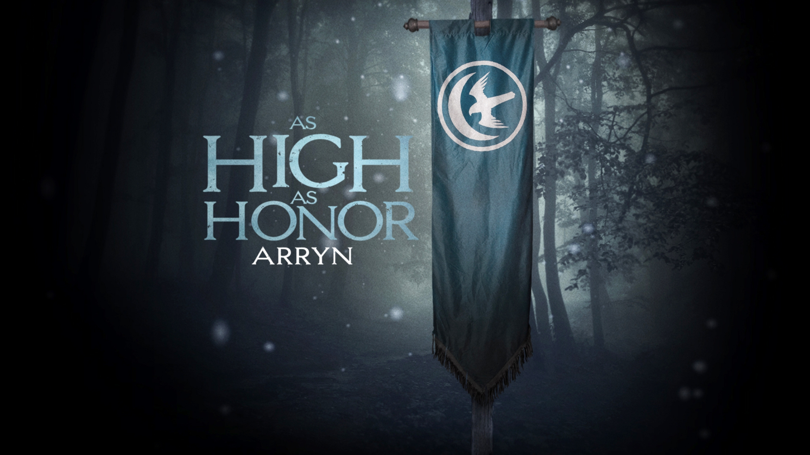

🐺 House Stark of Winterfell
The ancient ruling house of the North. Known for honor, loyalty, and justice. Their words "Winter is Coming" remind them to always be prepared for hardship.
Descended from the First Men, House Stark has ruled Winterfell for thousands of years. They are stern but fair leaders who value family above all else.

🦁 House Lannister of Casterly Rock
The richest house in Westeros, ruling from Casterly Rock. Known for power, intelligence, and political influence.
Their motto "Hear Me Roar" reflects pride and dominance across the Seven Kingdoms.

🐉 House Targaryen of Dragonstone
Once rulers of the Seven Kingdoms for nearly 300 years. Known for dragons, silver hair, and unmatched ambition.
Their words "Fire and Blood" symbolize power, destiny, and conquest.

🌹 House Tyrell of Highgarden
Rulers of the fertile Reach, masters of diplomacy and wealth. Known for charm, influence, and political strategy.
Their motto "Growing Strong" represents patience and rising power.

🦌 House Baratheon of Storm's End
A strong warrior house known for strength, rebellion, and leadership. They once ruled the Iron Throne after Robert’s Rebellion.
Their words "Ours is the Fury" reflect their aggressive and passionate nature.

🐙 House Greyjoy of Pyke
Rulers of the Iron Islands. Fierce seafarers who live by strength and raids.
Their motto "We Do Not Sow" represents their belief in taking what they want by force.

☀️ House Martell of Dorne
Rulers of Dorne, known for independence, pride, and resilience. They are culturally different from the rest of Westeros.
Their motto "Unbowed, Unbent, Unbroken" represents their resistance to conquest.

🦅 House Arryn of the Vale
Noble house ruling the Vale from the Eyrie, high in the mountains. Known for honor, purity, and isolation.
Their motto "As High as Honor" reflects their strict code of justice.